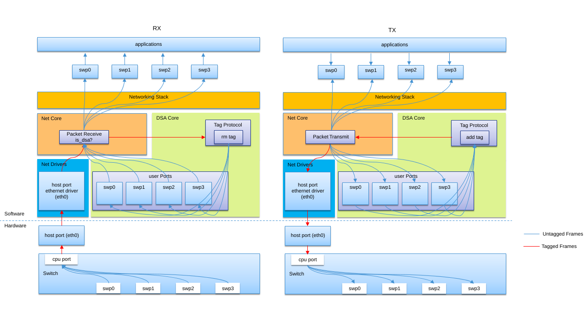

Distributed Switch Architecture (DSA)
Distributed Switch Architecture (DSA) is not something new. It has been a mature subsystem in Linux for many years. This document just skips the background, terms and any knowledge related description, as user may find all of these in Linux DSA documentation.
DSA switch TX/RX process
The DSA switch TX/RX process is as below.

Host interface
Host interface network devices use regular and unmodified ethernet driver working as DSA conduit port, which manages the switch through processor.
Switch interface
The switch interfaces are also exposed as standard ethernet interfaces in zephyr. The one connected to conduit port work as CPU port, and the others for user purpose work as user ports.
Switch tagging protocols
Generally, switch tagging protocols are vendor specific. They all contain something which:
identifies which port the Ethernet frame came from/should be sent to
provides a reason why this frame was forwarded to the management interface
And tag on the packets to give them a switch frame header. But there are also tag-less case. It depends on the vendor.
Networking stack process
In order to have the DSA subsystem process the Ethernet switch specific tagging protocol via conduit port.
For RX path, put dsa_recv() at beginning of net_recv_data() in subsys/net/ip/net_core.c
to handle first for untagging and re-directing interface.
For TX path, the switch interfaces register as standard ethernet devices with dsa_xmit()
as ethernet_api->send. The dsa_xmit() processes the tagging and re-directing to conduit
port work.
DSA device driver support
As the DSA core driver interacts with subsystems/drivers including MDIO, PHY and device tree to to support the common DSA setup and working process. The device driver support is much easy.
For device tree, the switch description should be following the dts/bindings/dsa/dsa.yaml.
For device driver, all needed to prepare are dsa_api, private data if has, and
dsa_port_config. The macro functions could be utilized. And below is an example
of i.MX NETC.
#define DSA_NETC_PORT_INST_INIT(port, n) \
COND_CODE_1(DT_NUM_PINCTRL_STATES(port), \
(PINCTRL_DT_DEFINE(port);), (EMPTY)) \
struct dsa_netc_port_config dsa_netc_##n##_##port##_config = { \
.pincfg = COND_CODE_1(DT_NUM_PINCTRL_STATES(port), \
(PINCTRL_DT_DEV_CONFIG_GET(port)), NULL), \
.phy_mode = NETC_PHY_MODE(port), \
}; \
struct dsa_port_config dsa_##n##_##port##_config = { \
.use_random_mac_addr = DT_PROP(port, zephyr_random_mac_address), \
.mac_addr = DT_PROP_OR(port, local_mac_address, {0}), \
.port_idx = DT_REG_ADDR(port), \
.phy_dev = DEVICE_DT_GET_OR_NULL(DT_PHANDLE(port, phy_handle)), \
.phy_mode = DT_PROP_OR(port, phy_connection_type, ""), \
.ethernet_connection = DEVICE_DT_GET_OR_NULL(DT_PHANDLE(port, ethernet)), \
.prv_config = &dsa_netc_##n##_##port##_config, \
}; \
DSA_PORT_INST_INIT(port, n, &dsa_##n##_##port##_config)
#define DSA_NETC_DEVICE(n) \
AT_NONCACHEABLE_SECTION_ALIGN(static netc_cmd_bd_t dsa_netc_##n##_cmd_bd[8], \
NETC_BD_ALIGN); \
static struct dsa_netc_data dsa_netc_data_##n = { \
.cmd_bd = dsa_netc_##n##_cmd_bd, \
}; \
DSA_SWITCH_INST_INIT(n, &dsa_netc_api, &dsa_netc_data_##n, DSA_NETC_PORT_INST_INIT);
Common pitfalls using DSA setups
This is copied from Linux DSA documentation. It applies to zephyr too. Although conduit port and cpu port exposed as ethernet device in zephyr, they are not able to be used.
Note
Once a conduit network device is configured to use DSA (dev->dsa_ptr becomes non-NULL), and the switch behind it expects a tagging protocol, this network interface can only exclusively be used as a conduit interface. Sending packets directly through this interface (e.g.: opening a socket using this interface) will not make us go through the switch tagging protocol transmit function, so the Ethernet switch on the other end, expecting a tag will typically drop this frame.
TODO work
Comparing to Linux, there are too much features to support in/based on zephyr DSA. But basically bridge layer should be supported. Then DSA could provide two options for users to use switch ports.
Standalone mode: all user ports work as regular ethernet devices. No switching.
Bridge mode: switch mode enabled with adding user ports into virtual bridge device. IP address could be assigned to the bridge.